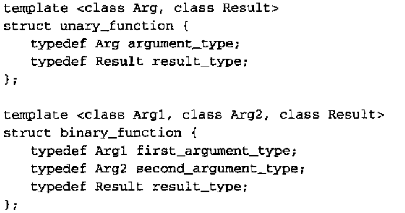

仿函数
行為像函數的任意東西 為仿函數
相对函数的好处
functor可以拥有状态 每个functor都有其型别 functor执行速度通常比function快
注意
算法中传入functor 其实是执行的functor的拷贝 既不会改变原functor内部状态(变量) 除非以显示引用的方式出让引用 如 functor f; std::generate<...,functor &>(..,..,f); 或 for_each()会返回functor functor f=for_each(begin,end,functor);
判断式
返回布尔值(可转换为bool)的一个 functor
注意
对STL而言 正确的判断试 对于传入同样的参数始终返回同样的结果 (如不能 第一次调用fun(x) 返回true 下一次调用fun(x)却返回false)
预定义的functor
| functor | note |
| negate<T> | -param |
| plus<T> | param1+param2 |
| minus<T> | param1-param2 |
| multiplies<T> | param1*param2 |
| divides<T> | param1/param2 |
| modulus<T> | param1%param2 |
| equal_to<T> | param1==param2 |
| not_equal_to<T> | param1!=param2 |
| less<T> | param1<param2 |
| less_equal<T> | param1<=param2 |
| greater<T> | param1>param2 |
| greater_equal<T> | param1>=param2 |
| logical_not<T> | !param |
| logical_and<T> | param1 && param2 |
| logical_or<T> | param1 || param2 |
函数配接器
将仿函数和另外一个仿函数(或值 或一般函数) 结合起来的仿函数
配接器
| 配接器 | 含义 |
| bind1st(op,value) | op(value,param) |
| bind2nd(op,value) | op(param,value) |
| not1(op) | !op(param) |
| not2(op) | !op(param1,param2) |
example
find_if(begin,end, bind2nd(greatre<int>(),42))
针对成员函数设计的配接器
mem_fun_ref(op) //调用op,op是对象的一个const成员函数 men_fun(op) //同上 不过是早期的版本
example
struct point
{
int x;
int y;
void display() const
{
std::cout<<"x="<<x<<" y="<<y<<std::endl;
}
void addDisplay(int i) const
{
std::cout<<"x+"<<i<<"="<<x+i<<" y+"<<i<<"="<<y+i<<std::endl;
}
};
int _tmain(int argc, _TCHAR* argv[])
{
std::vector<point> v;
std::back_insert_iterator<std::vector<point> > back_iter(v);
point tmp;
for(int i=0;i<5;++i)
{
tmp.x=tmp.y=i;
back_iter=tmp;
}
std::for_each(v.begin(),v.end(),std::mem_fun_ref(&point::display));
std::for_each(v.begin(),v.end(),std::bind2nd(std::mem_fun_ref(&point::addDisplay),1));
system("pause");
return 0;
}
针对一般函数设计的配接器
ptr_fun(op) //参见mem_fun_ref
自定义仿函数使用配接器
需要满足一些条件，提供一些成员型别反应参数和返回值 标准库提供如下定义  只要仿函数继承上述结构 便能获得使用配接器的能力